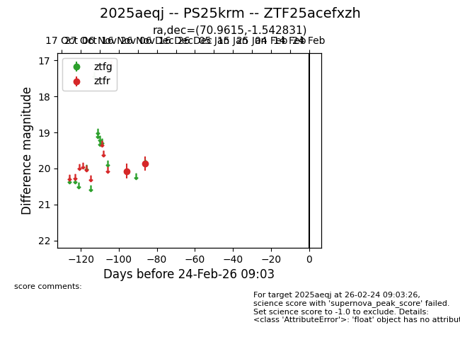
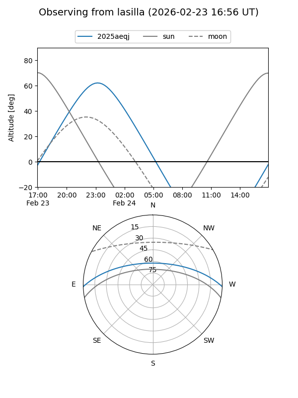
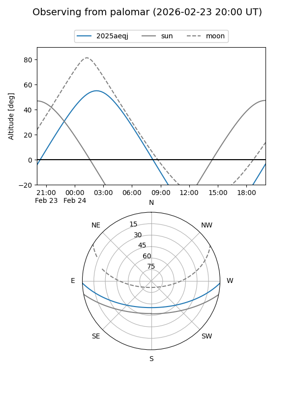

2025aeqj
Target 2025aeqj at 2025-12-31 16:59
Aliases and brokers:
FINK:
Lasair:
ALeRCE:
TNS:
YSE:
alt names
ZTF25acefxzh (ztf,fink_ztf)
2025aeqj (tns,yse)
PS25krm (panstarrs)
Coordinates:
equatorial (ra, dec) = 70.9615,-1.54283
equatorial (HMS+DMS) = 04:43:50.76,-01:32:34.19
galactic (l, b) = (198.5958,-28.84122)
Flags:
Photometry:
last ztfr=19.86
2 ztfr detections
Lightcurve

Visibility


Additional plots